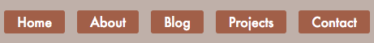
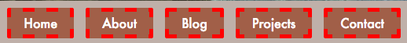
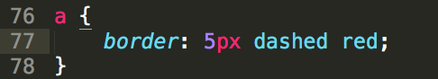

Margins, Borders, and Padding
November 27, 2015
Hello everyone! I'm back with another exciting installment in my coding education at Dev Bootcamp. This week, I focused on learning css and setting up my own website (you're looking at it!). As part of that work, I really dug into a few concepts to make sure everything looked right. A big part of this was learning about borders, padding, and margins on html elements. In this post, I'm going to explain a bit about each to make it easier for you all in the future!
Let's start with padding (my personal favorite). Padding is the space within an element, but outside of the content itself. In the before/after (left and right pictures, respectively) screenshots below, you can see how adding padding to my navigation bar buttons gave it a much more comfortable view. The brick colored space around the text in the buttons is the padding! I used more padding on the left/right than the top/bottom to make my buttons a nice rectangle shape.
Next up is the border. This one's a little more straightforward since it's a term we've all used before. The border surrounds the padding of the element. In the screenshot below, you can see the red, dashed lines around my buttons. You can get very creative with your borders too! You can pick the thickness, style (dashed, dotted, solid), and color. An example of my my css styling for these buttons is in the right screenshot.
 Lastly, we've got margins. Margins define the space outside of the border that separates an element from any other elements. Using our button example one last time, you can see in the before/after pictures below (left and right, respectively) how adding a left margin adds space between the buttons. Without margins, the buttons would be right on top of each other. Margins allow us to give them some breathing room and define a little more carefully where we want an element to lay on the page.
Padding, borders, and margins work together to make websites look the way they do. Attention to detail and knowing how changes to each affect your page's overall layout will ensure a positive experience for your users. That's all for this week's post, lookout for more in the coming weeks!